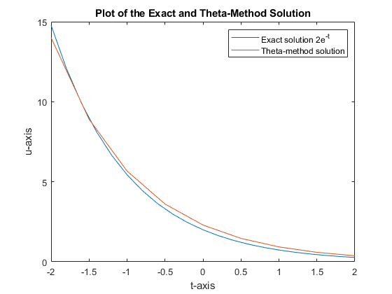
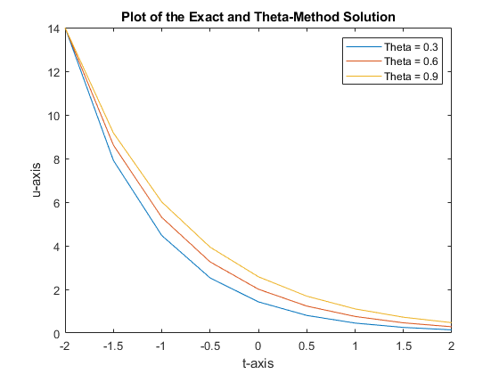
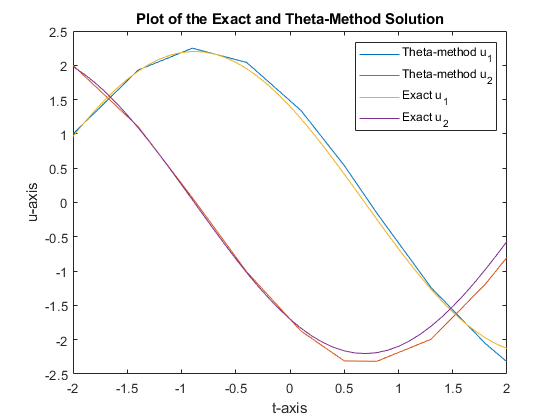
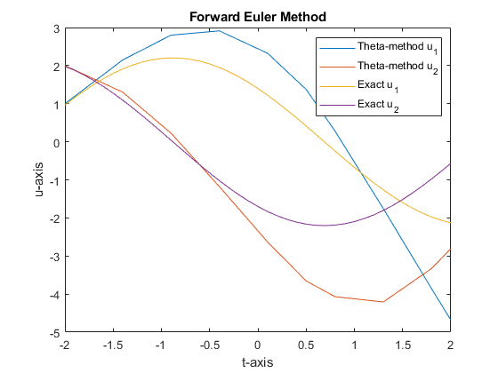
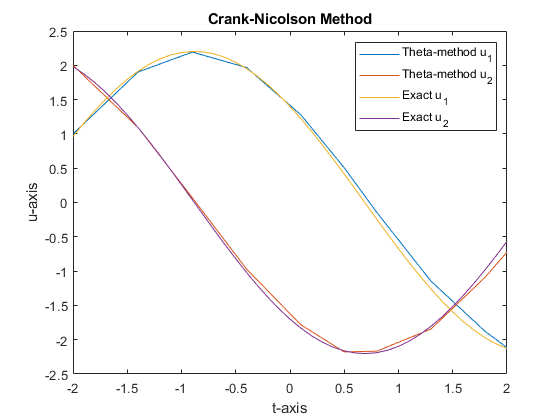
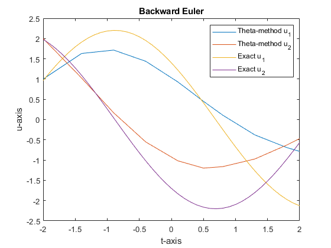

Assignment VI
by Carmen Oliver and David Straka
Contents
Exercise 1 - Initial Value Problem for a System of Differential Equations
Present two different problems that are solved with the theta-method for different values of theta, then compare the forward Euler, backward Euler and Crank-Nicolson methods.
PROBLEM 1
% Solve the initial value problem % u' = -u % u(-2) = 14 [T,U] = ODEsolve(@(t,u) -u,[-2,2],14,0.75,0.5) % Plot the numberical theta-method solution and the exact solution 2e^-t x = -2:0.2:2; plot(x,2*exp(-x),T,U); title("Plot of the Exact and Theta-Method Solution"); xlabel('t-axis'); ylabel('u-axis'); legend('Exact solution 2e^{-t}','Theta-method solution');
T =
-2.0000
-1.5000
-1.0000
-0.5000
0
0.5000
1.0000
1.5000
2.0000
U =
14.0000
8.9091
5.6694
3.6078
2.2959
1.4610
0.9297
0.5917
0.3765

% Solve the same initial value problem: % u' = -u % u(-2) = 14 % for values of theta 0.3,0.6, and 0.9 [T1,U1] = ODEsolve(@(t,u) -u,[-2,2],14,0.3,0.5) [T2,U2] = ODEsolve(@(t,u) -u,[-2,2],14,0.6,0.5) [T3,U3] = ODEsolve(@(t,u) -u,[-2,2],14,0.9,0.5) % Plot solutions for different theta values plot(T1,U1,T2,U2,T3,U3); title("Plot of the Exact and Theta-Method Solution"); xlabel('t-axis'); ylabel('u-axis'); legend('Theta = 0.3','Theta = 0.6','Theta = 0.9');
T1 =
-2.0000
-1.5000
-1.0000
-0.5000
0
0.5000
1.0000
1.5000
2.0000
U1 =
14.0000
7.9130
4.4726
2.5280
1.4289
0.8076
0.4565
0.2580
0.1458
T2 =
-2.0000
-1.5000
-1.0000
-0.5000
0
0.5000
1.0000
1.5000
2.0000
U2 =
14.0000
8.6154
5.3018
3.2626
2.0078
1.2356
0.7603
0.4679
0.2879
T3 =
-2.0000
-1.5000
-1.0000
-0.5000
0
0.5000
1.0000
1.5000
2.0000
U3 =
14.0000
9.1724
6.0095
3.9373
2.5796
1.6901
1.1073
0.7255
0.4753

PROBLEM 2
% Solve the initial value problem % u'_1 = u_2 % u'_2 = -u_1 % u(0) = [1 2] % at given times [-2,-1.4,-0.9,-0.4,0.1,0.5,0.8,1.3,1.8,2] [T,U] = ODEsolve(@(t,u) [0 1; -1 0]*u,... [-2,-1.4,-0.9,-0.4,0.1,0.5,0.8,1.3,1.8,2],[1 2],0.45,0.5) % Plot the exact solution and the theta-method solution u1 = @(x) 1.4*cos(x) - 1.7*sin(x); u2 = @(x) -1.7*cos(x) - 1.4*sin(x); x = -2:0.1:2; plot(T,U(:,1),T,U(:,2),x,u1(x),x,u2(x)); title("Plot of the Exact and Theta-Method Solution"); xlabel('t-axis'); ylabel('u-axis'); legend('Theta-method u_1','Theta-method u_2','Exact u_1','Exact u_2');
T =
-2.0000
-1.4000
-0.9000
-0.4000
0.1000
0.5000
0.8000
1.3000
1.8000
2.0000
U =
1.0000 2.0000
1.9299 1.1063
2.2498 0.0694
2.0419 -1.0087
1.3432 -1.8725
0.5396 -2.3093
-0.1545 -2.3150
-1.2397 -1.9936
-2.0557 -1.1901
-2.3230 -0.7991

COMPARING FORWARD EULER, BACKWARD EULER AND CRANK-NICOLSON METHODS
Choose theta 0, 0.5 and 1 to compare precision of Forward Euler, Crank-Nicolson, and Backward Euler method, respectively. Observe that the solution from the Crank-Nicolson method is most precisely copying the exact solution.
FORWARD EULER METHOD
% Solving [T,U] = ODEsolve(@(t,u) [0 1; -1 0]*u,... [-2,-1.4,-0.9,-0.4,0.1,0.5,0.8,1.3,1.8,2],[1 2],0,0.5); % Plotting plot(T,U(:,1),T,U(:,2),x,u1(x),x,u2(x)); title("Forward Euler Method"); xlabel('t-axis'); ylabel('u-axis'); legend('Theta-method u_1','Theta-method u_2','Exact u_1','Exact u_2');

CRANK-NICOLSON METHOD
% Solving [T,U] = ODEsolve(@(t,u) [0 1; -1 0]*u,... [-2,-1.4,-0.9,-0.4,0.1,0.5,0.8,1.3,1.8,2],[1 2],0.5,0.5); % Plotting plot(T,U(:,1),T,U(:,2),x,u1(x),x,u2(x)); title("Crank-Nicolson Method"); xlabel('t-axis'); ylabel('u-axis'); legend('Theta-method u_1','Theta-method u_2','Exact u_1','Exact u_2');

BACKWARD EULER METHOD
% Solving [T,U] = ODEsolve(@(t,u) [0 1; -1 0]*u,... [-2,-1.4,-0.9,-0.4,0.1,0.5,0.8,1.3,1.8,2],[1 2],1,0.5); % Plotting plot(T,U(:,1),T,U(:,2),x,u1(x),x,u2(x)); title("Backward Euler"); xlabel('t-axis'); ylabel('u-axis'); legend('Theta-method u_1','Theta-method u_2','Exact u_1','Exact u_2');
